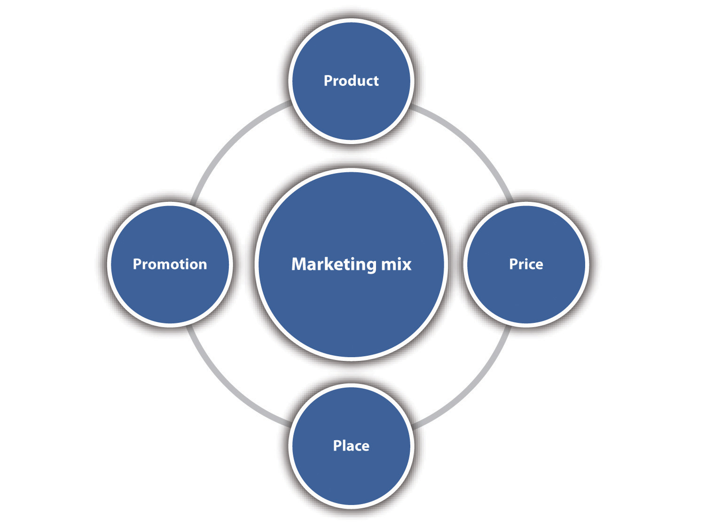
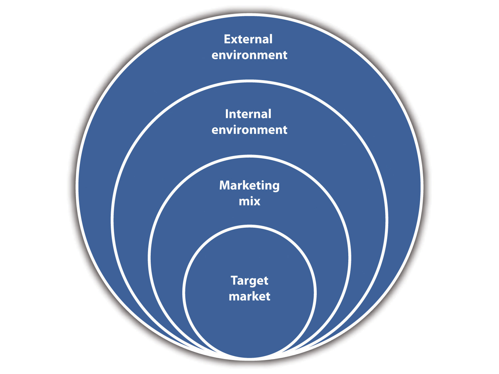
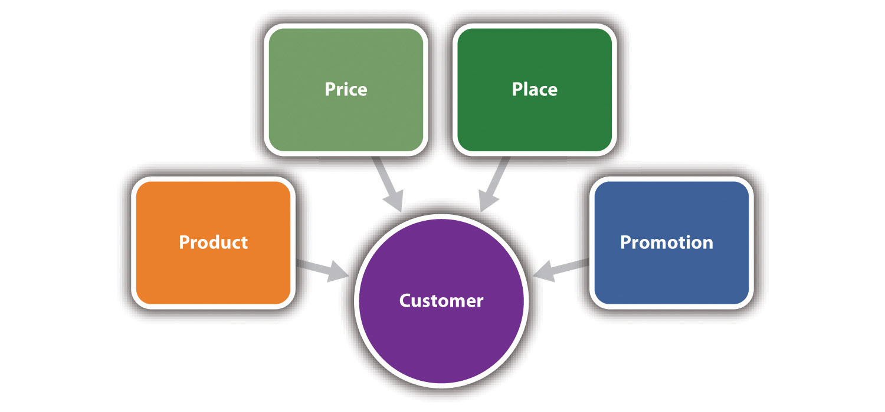
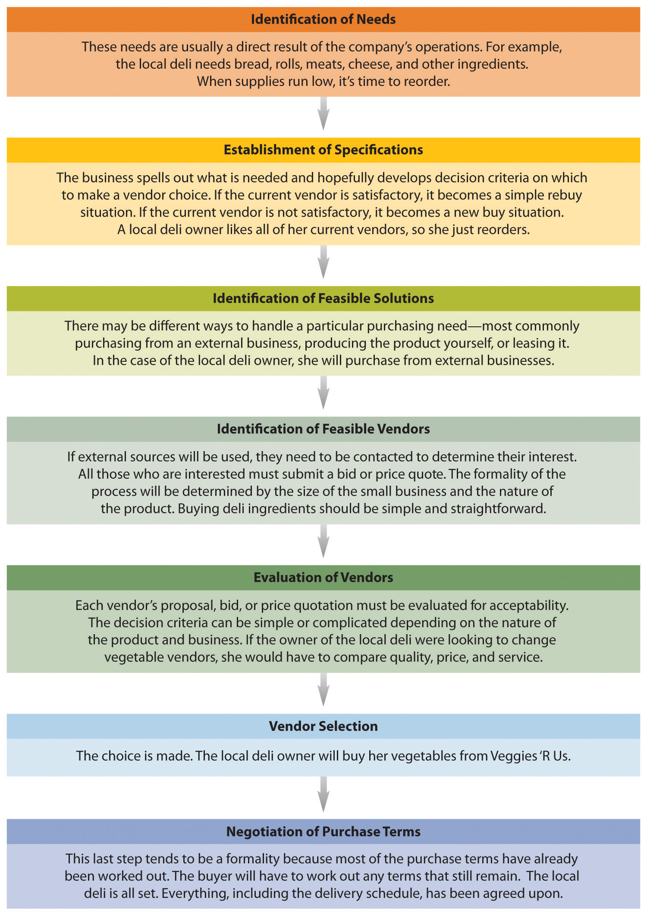

Source: Used with permission from Max and Mina’s Ice Cream.
Growing up in the 1970s, Bruce and Mark Becker loved ice cream. Their Grandpa Max used to create all different kinds of ice cream for Grandma Mina and the boys to try. Grandpa was an organic chemist and loved to create some interesting flavors. Years later, after Grandpa Max passed away, Bruce was cleaning out his grandpa’s house and discovered his secret book of recipes.
And so it began.
In the 1980s, Bruce started on his journey and traveled throughout Europe and the United States doing gourmet ice cream research. With all the new information gathered and the treasure trove of Grandpa Max’s secret recipes, Bruce and Mark opened Max and Mina’s Ice Cream in 1997 in a shopping center next to Shimon’s Pizza Falafel Dairy Restaurant in Flushing, Queens, New York. They test marketed their recipes directly to the public. The public loved it—and so did the local restaurants and party planners.
Max and Mina’s Ice Cream revolutionized America’s favorite dessert with daring ingredients and bold innovation. Their unique ability to intrigue and challenge old notions of mundane flavors draws unbelievable attention at home in New York and around the globe. The most distant customer of note was from Australia, someone who insisted on going to Max and Mina’s right off the plane at Kennedy Airport.
The Beckers make their ice cream products with at least 16 percent butterfat, putting them into the gourmet category. All their ice creams are kosher, but some products adhere to even stricter dairy guidelines. The shop itself features an array of posters, a display of Wacky Packages bubblegum stickers, candy wrappers, a Jerry Garcia etching, and old-fashioned signs.
A visit to Max and Mina’s will be an unusual ice cream experience (see Note 6.2 "Video Clip 6.1"). If you dare to take the plunge, why not try unforgettable flavors like beer, lox, babka, corn-on-the-cob, ketchup, garlic, or merlot—just to mention a few? There are also many of the more traditional flavors that you know and love. There is a rotating menu of one thousand flavors, but only about forty ice cream flavors and eight to ten sorbets are available at any one time. Bruce and Mark constantly encourage their patrons to be vocal in brainstorming new flavors, especially flavors that compliment events. Turkey ice cream, anyone? Have an idea? Stop by and give Max and Mina’s a try.“About Us,” Max and Mina’s Ice Cream, accessed December 2, 2011, www.maxandminasicecream.com/about.html; Miriam Hill, “1000 Flavors and a Little Romance,” Philadelphia Inquirer, accessed December 2, 2011, www.maxandminasicecream.com/images/articles/4.jpg; John Hyland, “Lox in a Cone: Sliced Thin It’s Not,” New York Times, August 16, 2000, accessed December 2, 2011, www.maxandminasicecream.com/images/articles/1.jpg.
Because the purpose of business is to create a customer, the business enterprise has two—and only two—basic functions: marketing and innovation. Marketing and innovation produce results; all the rest are costs. Marketing is the distinguishing, unique function of the business.Jack Trout, “Peter Drucker on Marketing,” Forbes, July 3, 2006, accessed January 19, 2012, www.forbes.com/2006/06/30/jack-trout-on-marketing-cx_jt_0703drucker .html.
Peter Drucker
MarketingThe activity, set of institutions, and processes for creating, communicating, and exchanging offerings that have value for customers, clients, partners, and society at large. It is a unique, distinguishing function of a business. is defined by the American Marketing Association as “the activity, set of institutions, and processes for creating, communicating, and exchanging offerings that have value for customers, clients, partners, and society at large.”“AMA Definition of Marketing,” American Marketing Association, December 17, 2007, accessed December 1, 2011, www.marketingpower.com/Community/ARC/Pages/Additional/Definition/default.aspx. Putting this formality aside, marketing is about delivering value and benefits: creating products and services that will meet the needs and wants of customers (perhaps even delighting them) at a price they are willing to pay and in places where they are willing to buy them. Marketing is also about promotional activities such as advertising and sales that let customers know about the goods and services that are available for purchase. Successful marketing generates revenue that pays for all other company operations. Without marketing, no business can last very long. It is that important and that simple—and it applies to small business.
Marketing is applicable to goods, services, events, experiences, people, places, properties, organizations, businesses, ideas, and information.Adapted from Philip Kotler and Kevin Lane Keller, Marketing Management (Upper Saddle River, NJ: Pearson Prentice Hall, 2009), 6–7.
There are several concepts that are basic to an understanding of marketing: the marketing concept, customer value, the marketing mix, segmentation, target market, the marketing environment, marketing management, and marketing strategy.
The marketing conceptThe focus of all company operations should be meeting the customer’s needs and wants in ways that distinguish a company from its competition but yet allow a company to meet organizational objectives and achieve profitability. has guided marketing practice since the mid-1950s.Philip Kotler and Kevin Lane Keller, Marketing Management (Upper Saddle River, NJ: Pearson Prentice Hall, 2009), 19. The concept holds that the focus of all company operations should be meeting the customer’s needs and wants in ways that distinguish a company from its competition. However, company efforts should be integrated and coordinated in such a way to meet organizational objectives and achieve profitability. Perhaps not surprisingly, successful implementation of the marketing concept has been shown to lead to superior company performance.Rohit Deshpande and John U. Farley, “Measuring Market Orientation: Generalization and Synthesis,” Journal of Market-Focused Management 2 (1998): 213–32; Ajay K. Kohli and Bernard J. Jaworski, “Market Orientation: The Construct, Research Propositions, and Managerial Implications,” Journal of Marketing 54 (1990): 1–18; and John C. Narver and Stanley F. Slater, “The Effect of a Market Orientation on Business Profitability,” Journal of Marketing 54 (1990): 20–35—all as cited in Philip Kotler and Kevin Lane Keller, Marketing Management (Upper Saddle River, NJ: Pearson Prentice Hall, 2009), 19. “The marketing concept recognizes that there is no reason why customers should buy one organization’s offerings unless it is in some way better at serving the customers’ wants and needs than those offered by competing organizations. Customers have higher expectations and more choices than ever before. This means that marketers have to listen more closely than ever before.”Charles W. Lamb, Joseph F. Hair, and Carl McDaniel, Essentials of Marketing (Mason, OH: South-Western, 2004), 8.
Sam Walton, the founder of Walmart, put it best when he said, “There is only one boss: the customer. And he can fire everybody in the company, from the chairman on down, simply by spending his money somewhere else.”“You Don’t Say?,” Sales and Marketing Management, October 1994, 111–12. Small businesses are particularly suited to abiding by the marketing concept because they are more nimble and closer to the customer than are large companies. Changes can be made more quickly in response to customer wants and needs.
The societal marketing conceptA company will have an advantage over its competitors if it applies the marketing concept in a manner that maximizes society’s well-being, which requires balancing customer satisfaction, company profits, and the long-term welfare of society. emerged in the 1980s and 1990s, adding to the traditional marketing concept. It assumes that a “company will have an advantage over competitors if it applies the marketing concept in a manner that maximizes society’s well-being”Dana-Nicoleta Lascu and Kenneth E. Clow, Essentials of Marketing (Mason, OH: Atomic Dog Publishing, 2007), 12. and requires companies to balance customer satisfaction, company profits, and the long-term welfare of society. Although the expectation of ethical and responsible behavior is implicit in the marketing concept, the societal marketing concept makes these expectations explicit.
Small business is in a very strong position in keeping with the societal marketing concept. Although small businesses do not have the financial resources to create or support large philanthropic causes, they do have the ability to help protect the environment through green business practicesA business practice that contributes to protecting the environment. such as reducing consumption and waste, reusing what they have, and recycling everything they can. Small businesses also have a strong record of supporting local causes. They sponsor local sports teams, donate to fund-raising events with food and goods or services, and post flyers for promoting local events. The ways of contributing are virtually limitless.
Do Well While Doing Good
Small business sustainability practices.
www.startupnation.com/podcasts/episodes/9564/creating-sustainable-business-practices.htm
The holistic marketing conceptDeveloping, designing, and implementing marketing programs, processes, and activities that recognize breadth and interdependence. is a further iteration of the marketing concept and is thought to be more in keeping with the trends and forces that are defining the twenty-first century. Today’s marketers recognize that they must have a complete, comprehensive, and cohesive approach that goes beyond the traditional applications of the marketing concept.Philip Kotler and Kevin Lane Keller, Marketing Management (Upper Saddle River, NJ: Pearson Prentice Hall, 2009), 19. A company’s “sales and revenues are inextricably tied to the quality of each of its products, services, and modes of delivery and to its image and reputation among its constituencies. [The company] markets itself through everything it does, its substance as well as its style. It is that all-encompassing package that the organization then sells.”Charles S. Mack, “Holistic Marketing,” Association Management, February 1, 1999, accessed January 19, 2012, www.asaecenter.org/Resources/AMMagArticleDetail.cfm?ItemNumber=880. What we see in the holistic marketing concept is the traditional marketing concept on steroids. Small businesses are natural for the holistic marketing concept because the bureaucracy of large corporations does not burden them. The size of small businesses makes it possible, perhaps imperative, to have fluid and well-integrated operations.
The definition of marketing specifically includes the notion that offerings must have value to customers, clients, partners, and society at large. This necessarily implies an understanding of what customer value is. Customer valueThe difference between the benefits a customer receives from a product or a service and the costs associated with obtaining the product or the service. is discussed at length in Chapter 2 "Your Business Idea: The Quest for Value", but we can define it simply as the difference between perceived benefits and perceived costs. Such a simple definition can be misleading, however, because the creation of customer value will always be a challenge—most notably because a company must know its customers extremely well to offer them what they need and want. This is complicated because customers could be seeking functional valueA product or a service performs a utilitarian purpose. (a product or a service performs a utilitarian purpose), social valueA sense of relationship with other groups through images or symbols. (a sense of relationship with other groups through images or symbols), emotional valueThe ability to evoke an emotional or an affective response. (the ability to evoke an emotional or an affective response), epistemic valueOffering novelty or fun. (offering novelty or fun), or conditional valueDerived from a particular context or a sociocultural setting, such as shared holidays. (derived from a particular context or a sociocultural setting, such as shared holidays)—or some combination of these types of value. (See Chapter 2 "Your Business Idea: The Quest for Value" for a detailed discussion of the types of value.)
Marketing plays a key role in creating and delivering value to a customer. Customer value can be offered in a myriad of ways. In addition to superlative ice cream, for example, the local ice cream shop can offer a frequent purchase card that allows for a free ice cream cone after the purchase of fifteen ice cream products at the regular price. Your favorite website can offer free shipping for Christmas purchases and/or pay for returns. Zappos.com offers free shipping both ways for its shoes. The key is for a company to know its consumers so well that it can provide the value that will be of interest to them.
The purpose of segmenting a market is to focus the marketing and sales efforts of a business on those prospects who are most likely to purchase the company’s product(s) or service(s), thereby helping the company (if done properly) earn the greatest return on those marketing and sales expenditures.Center for Business Planning, “Market Segmentation,” Business Resource Software, Inc., accessed December 1, 2011, www.businessplans.org/segment.html. Market segmentationDividing the market into several portions that are different from each other. It involves recognizing that the market at large is not homogeneous. maintains two very important things: (1) there are relatively homogeneous subgroups (no subgroup will ever be exactly alike) of the total population that will behave the same way in the marketplace, and (2) these subgroups will behave differently from each other. Market segmentation is particularly important for small businesses because they do not have the resources to serve large aggregate markets or maintain a wide range of different products for varied markets.
The marketplace can be segmented along a multitude of dimensions, and there are distinct differences between consumer and business markets. Some examples of those dimensions are presented in Table 6.1 "Market Segmentation".
LifeLock, a small business that offers identity theft protection services, practices customer type segmentation by separating its market into business and individual consumer segments.
Table 6.1 Market Segmentation
| Consumer Segmentation Examples | Business Segmentation Examples |
|---|---|
|
Geographic Segmentation
|
Demographic Segmentation
|
|
Demographic Segmentation
|
Operating Variables
|
|
Psychographic Segmentation
|
Purchasing Approaches: Which to Choose?
|
|
Behavioral Segmentation
|
Situational Factors: Which to Choose?
|
|
Personal Characteristics: Which to Choose?
|
Other Characteristics
|
Source: Adapted from “Market Segmentation,” Business Resource Software, Inc., accessed December 2, 2011, http://www.businessplans.org/segment.html; adapted from Philip Kotler and Kevin Lane Keller, Marketing Management (Upper Saddle River, NJ: Pearson Prentice Hall, 2009), 214, 227.
Market segmentation requires some marketing research. The marketing research process is discussed in Section 6.3 "Marketing Research".
Market segmentation should always precede the selection of a target marketOne or more segments that have been chosen as the focus for business operations.. A target market is one or more segments (e.g., income or income + gender + occupation) that have been chosen as the focus for business operations. The selection of a target market is important to any small business because it enables the business to be more precise with its marketing efforts, thereby being more cost-effective. This will increase the chances for success. The idea behind a target market is that it will be the best match for a company’s products and services. This, in turn, will help maximize the efficiency and effectiveness of a company’s marketing efforts:
It is not feasible to go after all customers, because customers have different wants, needs and tastes. Some customers want to be style leaders. They will always buy certain styles and usually pay a high price for them. Other customers are bargain hunters. They try to find the lowest price. Obviously, a company would have difficulty targeting both of these market segments simultaneously with one type of product. For example, a company with premium products would not appeal to bargain shoppers…
Hypothetically, a certain new radio station may discover that their music appeals more to 34–54-year-old women who earn over $50,000 per year. The station would then target these women in their marketing efforts.Rick Suttle, “Define Market Segmentation & Targeting,” Chron.com, accessed December 1, 2011, smallbusiness.chron.com/define-market-segmentation-targeting-3253 .html.
Target markets can be further divided into niche markets. A niche marketA small, more narrowly defined market that is not being served well or at all by mainstream product or service marketers. is a small, more narrowly defined market that is not being served well or at all by mainstream product or service marketers. People are looking for something specific, so target markets can present special opportunities for small businesses. They fill needs and wants that would not be of interest to larger companies. Niche products would include such things as wigs for dogs, clubs for left-handed golfers, losing weight with apple cider vinegar, paint that transforms any smooth surface into a high performance dry-erase writing surface, and 3D printers. These niche products are provided by small businesses. Niche ideas can come from anywhere.
Marketing mixThe combination of product, price, promotion, and place (distribution). is easily one of the most well-known marketing terms. More commonly known as “the four Ps,” the traditional marketing mix refers to the combination of product, price, promotion, and place (distribution). Each component is controlled by the company, but they are all affected by factors both internal and external to the company. Additionally, each element of the marketing mix is impacted by decisions made for the other elements. What this means is that an alteration of one element in the marketing mix will likely alter the other elements as well. They are inextricably interrelated. No matter the size of the business or organization, there will always be a marketing mix. The marketing mix is discussed in more detail in Chapter 7 "Marketing Strategy". A brief overview is presented here.
Figure 6.1 The Marketing Mix
Product refers to tangible, physical products as well as to intangible services. Examples of product decisions include design and styling, sizes, variety, packaging, warranties and guarantees, ingredients, quality, safety, brand name and image, brand logo, and support services. In the case of a services business, product decisions also include the design and delivery of the service, with delivery including such things as congeniality, promptness, and efficiency. Without the product, nothing else happens. Product also includes a company’s website.
Price is what it will cost for someone to buy the product. Although the exchange of money is what we traditionally consider as price, time and convenience should also be considered. Examples of pricing decisions include pricing strategy selection (e.g., channel pricingDifferent prices are charged depending on where a customer purchases a product. and customer segment pricingDifferent prices for different groups.), retail versus wholesale pricing, credit terms, discounts, and the means of making online payments. Channel pricing occurs when different prices are charged depending on where the customer purchases the product. A paper manufacturer may charge different prices for paper purchased by businesses, school bookstores, and local stationery stores. Customer segment pricing refers to charging different prices for different groups. A local museum may charge students and senior citizens less for admission.Philip Kotler and Kevin Lane Keller, Marketing Management (Upper Saddle River, NJ: Pearson Prentice Hall, 2009), 401.
Having the best product in the world is not worth much if people do not know about it. This is the role of promotion—getting the word out. Examples of promotional activities include advertising (including on the Internet), sales promotion (e.g., coupons, sweepstakes, and 2-for-1 sales), personal sales, public relations, trade shows, webinars, videos on company websites and YouTube, publicity, social media such as Facebook and Twitter, and the company website itself. Word-of-mouth communicationPeople talk to each other about their experiences with goods and services., where people talk to each other about their experiences with goods and services, is the most powerful promotion of all because the people who talk about products and services do not have any commercial interest.
Place is another word for distribution. The objective is to have products and services available where customers want them when they want them. Examples of decisions made for place include inventory, transportation arrangements, channel decisions (e.g., making the product available to customers in retail stores only), order processing, warehousing, and whether the product will be available on a very limited (few retailers or wholesalers) or extensive (many retailers or wholesalers) basis. A company’s website is also part of the distribution domain.
No matter what the business or organization, there will be a marketing mix. The business owner may not think about it in these specific terms, but it is there nonetheless. Here is an example of how the marketing mix can be configured for a local Italian restaurant (consumer market).
Here is an example of how the marketing mix could be configured for a green cleaning services business (business market).
The marketing environmentThe factors that affect a small business. includes all the factors that affect a small business. The internal marketing environmentA company’s existing products and strategies; culture; strengths and weaknesses; internal resources; capabilities with respect to marketing, manufacturing, and distribution; and relationships with stakeholders. refers to the company: its existing products and strategies; culture; strengths and weaknesses; internal resources; capabilities with respect to marketing, manufacturing, and distribution; and relationships with stakeholders (e.g., owners, employees, intermediaries, and suppliers). This environment is controllable by management, and it will present both threats and opportunities.
The external marketing environmentSocial factors, demographics, economic environment, political and legal factors, technology, competition, and ethics. must be understood by the business if it hopes to plan intelligently for the future. This environment, not controllable by management, consists of the following components:
Figure 6.2 The Marketing Environment
Small businesses are particularly vulnerable to changes in the external marketing environment because they do not have multiple product and service offerings and/or financial resources to insulate them. However, this vulnerability is offset to some degree by small businesses being in a strong position to make quick adjustments to their strategies if the need arises. Small businesses are also ideally suited to take advantage of opportunities in a changing external environment because they are more nimble than large corporations that can get bogged down in the lethargy and inertia of their bureaucracies.
The difference between marketing strategy and marketing management is an important one. Marketing strategySelecting one or more target markets, making differentiation and positioning decisions, and creating and maintaining a marketing mix—all within the context of marketing objectives. involves selecting one or more target markets, deciding how to differentiate and position the product or the service, and creating and maintaining a marketing mix that will hopefully prove successful with the selected target market(s)—all within the context of marketing objectives. DifferentiationA company’s efforts to set its product or service apart from the competition. involves a company’s efforts to set its product or service apart from the competition. PositioningPlacing the brand (whether store, product, or service) in the consumer’s mind in relation to other competing products, based on product traits and benefits that are relevant to the consumer. “entails placing the brand [whether store, product, or service] in the consumer’s mind in relation to other competing products, based on product traits and benefits that are relevant to the consumer.”Dana-Nicoleta Lascu and Kenneth E. Clow, Essentials of Marketing (Mason, OH: Atomic Dog Publishing, 2007), 170. Segmentation, target market, differentiation, and positioning are discussed in greater detail in Chapter 7 "Marketing Strategy".
Custom Suit Business Gets Makeover
A change in marketing strategy: the name of the business.
money.cnn.com/video/smallbusiness/2010/10/21/sbiz_turnaround_balani.cnnmoney
Sock Business Comes Home
A change in marketing strategy: the product.
money.cnn.com/video/smallbusiness/2010/11/17/sbiz_turnaround_darn_tough_vermont.smb
Marketing managementThe day-to-day tactical decisions, resource allocations, and carrying out of tasks that implement a marketing strategy., by contrast, involves the day-to-day tactical decisions, resource allocations (funds and people), and carrying out of tasks that implement the marketing strategy. It is the responsibility of marketing management to focus on quality and develop the marketing plan, which is discussed in Chapter 8 "The Marketing Plan".
Marketing Concepts in Two Minutes
(click to see video)A humorous definition of key marketing concepts.
It is very important in marketing to distinguish between the customer and the consumer. The customerThe person or the business that actually buys a product or a service., the person or the business that actually buys a product or a service, will determine whether a business succeeds or fails. It is that simple. It does not matter one iota if a business thinks its product or service is the greatest thing since sliced bread if no one wants to buy it. This is why customers play such a central role in marketing, with everything revolving around their needs, wants, and desires. We see the customer focus in the marketing concept, and we see it in the marketing mix.
Figure 6.3 The Customer and the Marketing Mix
The marketing mix should follow the determination of customer needs, wants, and desires. However, there are instances in which a product is created before the target market is selected and before the rest of the marketing mix is designed. One well-known example is Ivory Soap. This product was created by accident. Air was allowed to work its way into the white soap mixture that was being cooked. The result was Ivory Soap, a new and extraordinarily successful product for Procter & Gamble.“History of Ivory Soap,” Essortment.com, accessed December 1, 2011, www.essortment.com/history-ivory-soap-21051.html. Most companies do not have this kind of luck, though, so a more deliberate approach to understanding the customer is critical to designing the right marketing mix.
The consumerThe person or the company that uses or consumes a product. is the person or the company that uses or consumes a product. For example, the customer of a dry cleaning service is the person who drops off clothes, picks them up, and pays for the service. The consumer is the person who wears the clothes. Another example is a food service that caters business events. The person who orders lunch on behalf of the company is the customer. The people who eat the lunch are the consumers. The person who selects the catering service could be either or both. It is common for the customer and the consumer to be the same person, but this should not be assumed for all instances. The challenge is deciding whether to market to the customer or the consumer—or perhaps both.
There are two major types of customer markets: business-to-business (B2B)Organizations such as corporations; small businesses; government agencies; wholesalers; retailers; and nonprofit organizations, such as hospitals, universities, and museums. customers and individual consumers or end users (business-to-consumer [B2C])People who buy for themselves, their households, friends, coworkers, or for other non-business-related purposes.. B2B customers are organizations such as corporations; small businesses; government agencies; wholesalers; retailers; and nonprofit organizations, such as hospitals, universities, and museums. In terms of dollar volume, the B2B market is where the action is. More dollars and products change hands in sales to business buyers than to individual consumers or end users.Philip Kotler and Kevin Lane Keller, Marketing Management (Upper Saddle River, NJ: Pearson Prentice Hall, 2009), 182. The B2B market offers many opportunities for the small business. Examples of B2B products include office supplies and furniture, machinery, ingredients for food preparation, telephone and cell phone service, and delivery services such as FedEx or UPS.
The B2C market consists of people who buy for themselves, their households, friends, coworkers, or other non-business-related purposes. Examples of B2C products include cars, houses, clothing, food, telephone and cell phone service, cable television service, and medical services. Opportunities in this market are plentiful for small businesses. A walk down Main Street and a visit to the Internet are testaments to this fact.
The better a small business understands its customers, the better off it will be. It is not easy, and it takes time, but knowing who the customers are, where they come from, what they like and dislike, and what makes them tick will be of immeasurable value in designing a successful marketing mix. Being intuitive can and does work…but not for everyone and not all the time. A more systematic and thorough approach to understanding the customer makes much more sense. The problem is that many if not most small businesses probably do not take the time to do what it takes to understand their customers. This is an important part of the reason why so many small businesses fail.
Consumer Behavior Matters
(click to see video)Understanding a customer’s behavior will increase sales.
Consumer behaviorHow individuals, groups, and organizations select, buy, use, and dispose of goods, services, ideas, or experiences to satisfy their needs and wants.—“how individuals, groups, and organizations select, buy, use, and dispose of goods, services, ideas, or experiences to satisfy their needs and wants”Philip Kotler and Kevin Lane Keller, Marketing Management (Upper Saddle River, NJ: Pearson Prentice Hall, 2009), 182.—is the result of a complex interplay of factors, none of which a small business can control. These factors can be grouped into four categories: personal factorsAge, gender, race, ethnicity, occupation, income, and life-cycle stage., social factorsCulture, subculture, social class, family, and reference groups., psychological or individual factorsMotivation, perception, learning, attitudes, personality, and self-concept., and situational factorsThe reason for purchase, the time we have available to shop and buy, our mood, and the shopping environment.. It is important that small-business owners and managers learn what these factors are.
These factors all work together to influence a five-stage buying-decision process (Table 6.2 "Five Stages of the Consumer Buying Process"), the specific workings of which are unique to each individual. This is a generalized process. Not all consumers will go through each stage for every purchase, and some stages may take more time and effort than others depending on the type of purchase decision that is involved.Dana-Nicoleta Lascu and Kenneth E. Clow, Essentials of Marketing (Mason, OH: Atomic Dog Publishing, 2007), 112. Knowing and understanding the consumer decision process provides a small business with better tools for designing and implementing its marketing mix.
Table 6.2 Five Stages of the Consumer Buying Process
| Stage | Description | Example | |
|---|---|---|---|
| 1. | Problem recognition | Buyer recognizes a problem or need. | Joanne’s laptop just crashed, but she thinks it can be fixed. She needs it quickly. |
| 2. | Information search | Buyer searches for extensive or limited information depending on the requirements of the situation. The sources may be personal (e.g., family or friends), commercial (e.g., advertising or websites), public (e.g., mass media or consumer rating organizations), or experiential (e.g., handling or examining the product). | Joanne is very knowledgeable about computers, but she cannot fix them. She needs to find out about the computer repair options in her area. She asks friends for recommendations, checks out the yellow pages, does a Google search, draws on her own experience, and asks her husband. |
| 3. | Evaluation of alternatives | Buyer compares different brands, services, and retailers. There is no universal process that everyone uses. | Joanne knows that computer repair services are available at the nearby Circuit Place and Computer City stores. Unfortunately, she has had bad experiences at both. Her husband, David, recently took his laptop to a small computer repair shop in town that has been in business for less than a year. He was very pleased. Joanne checks out their website and is impressed by the very positive reviews. None of her friends could recommend anyone. |
| 4. | Purchase decision | Buyer makes a choice. | Joanne decides to take her computer to the small repair shop in town. |
| 5. | Postpurchase behavior | How the buyer feels about the purchase and what he or she does or does not do after the purchase. | Joanne’s laptop was fixed quickly, and the cost was very reasonable. She feels very good about the experience, so she posts a glowing review on the company’s website, recommends the shop to everyone she knows, and plans to go back should the need arise. Had she been unhappy with her experience, she would have posted a negative review on the company’s website, told everyone she knows not to go there, and refuse to go there again. It is this latter scenario that should be every small business’s nightmare. |
Source: Philip Kotler and Kevin Lane Keller, Marketing Management (Upper Saddle River, NJ: Pearson Prentice Hall, 2009), 168; Dana-Nicoleta Lascu and Kenneth E. Clow, Essentials of Marketing (Mason, OH: Atomic Dog Publishing, 2007), 112–17.
California’s Bargain Wine Boom
Consumers are shifting to less expensive wines from small winemakers.
www.time.com/time/video/player/0,32068,101527510001_1997358,00.html
Understanding how businesses make their purchasing decisions is critical to small businesses that market to the business sector. Purchases by a business are more complicated than purchases by someone making a personal purchase (B2C). B2B purchases vary according to dollar amount, the people involved in the decision process, and the amount of time needed to make the decision,Dana-Nicoleta Lascu and Kenneth E. Clow, Essentials of Marketing (Mason, OH: Atomic Dog Publishing, 2007), 137. and they involve “a much more complex web of interactions between prospects and vendors in which the actual transaction represents only a small part of the entire purchase process.”Bill Furlong, “How the Internet Is Transforming B2B Marketing,” BrandNewBusinesses.com, accessed December 1, 2011, www.brandnewbusinesses.com/NewsletterAugust2008A1.aspx.
The individual or the group that makes the B2B buying decisions is referred to as the buying centerIndividuals and groups who participate in the purchasing decision-making process and who share some common goals and the risks arising from the decision.. The buying center consists of “all those individuals and groups who participate in the purchasing decision-making process, who share some common goals and the risks arising from the decision.”Frederick E. Webster Jr. and Yoram Wind, Organizational Buying Behavior (Upper Saddle River, NJ: Prentice-Hall, 1972), 2, as cited in Philip Kotler and Kevin Lane Keller, Marketing Management (Upper Saddle River, NJ: Pearson Prentice Hall, 2009), 188. The buying center in a small business could be as small as one person versus the twenty or more people in the buying center of a large corporation. Regardless of the size of the buying center, however, there are seven distinct roles: initiator, gatekeeper, user, purchaser or buyer, decider, approver, and influencer.Philip Kotler and Kevin Lane Keller, Marketing Management (Upper Saddle River, NJ: Pearson Prentice Hall, 2009), 188; Dana-Nicoleta Lascu and Kenneth E. Clow, Essentials of Marketing (Mason, OH: Atomic Dog Publishing, 2007), 139. One person could play multiple roles, there could be multiple people in a single role, and the roles could change over time and across different purchase situations.
Figure 6.4 The B2B Buying Process
Source: Adapted from Dana-Nicoleta Lascu and Kenneth E. Clow, Essentials of Marketing (Mason, OH: Atomic Dog Publishing, 2007), 148–55.
The B2B purchasing process for any small business will be some variation of the process described in Figure 6.4 "The B2B Buying Process". The specifics of the process will depend on the nature of product, the simplicity of the decision to be made, and the number of people involved. Clearly the purchasing process for a single-person business will be much simpler than for a multiproduct business of 400 employees.
Customer experience is one of the great frontiers for innovation.Jeneanne Rae, “The Importance of Great Customer Experiences…And the Best Ways to Deliver Them,” Bloomberg BusinessWeek, November 27, 2006, accessed December 1, 2011, www.BusinessWeek.com/magazine/content/06_48/b4011429.htm?chan =search.
Jeneanne Rae
Customer experienceA customer’s entire interaction with a company or an organization. refers to a customer’s entire interaction with a company or an organization. The experience will range from positive to negative, and it begins when any potential customer has contact with any aspect of a business’s persona—the company’s marketing, all representations of the total brand, and what others say about the experience of working with the business.Fran ONeal, “‘Customer Experience’ for Small Business: When Does It Start?,” Small Business Growing, August 23, 2010, accessed December 1, 2011, smallbusinessgrowing.com/2010/08/23/what-is-the-customer-experience-for-small -business.
Customers will experience multiple touch pointsAll the communication, human, and physical interactions that customers experience during their relationship life cycle with a small business. (i.e., all the communication, human, and physical interactions that customers experience during their relationship life cycle with a small business)Eric Brown, “Engage Emotion and Shape the Customer Experience,” Small Business Answers, December 14, 2010, accessed December 1, 2011, www.smallbusinessanswers.com/eric-brown/engage-emotion-and-shape-the -customer-ex.php. during their visit. In a retail situation, a customer will experience the store design and layout; the merchandise that is carried and how it is displayed; the colors, sounds, and scents in the store; the cleanliness of the store; the lighting; the music; the helpfulness of the staff; and the prices. In a business situation, a customer will experience the design and layout of the reception and office areas, the colors chosen for carpeting and furniture, the friendliness and helpfulness of the reception staff, and the demeanor of the person or people to be seen. The experience also occurs when a customer communicates with a company via telephone; e-mail; the company website; and Facebook, Twitter, or other social media.
Store design plays a very important role in a customer’s experience. Check out the following three examples of small business store redesigns that have contributed to increased profitability:
Fine Wine & Good Spirits, Philadelphia
The Diamond Cellar, Dublin, Ohio
Roche Bros. Supermarkets
Good customer experiences “from the perspective of the customer…are useful (deliver value), usable (make it easy to find and engage with the value), and enjoyable (emotionally engaging so that people want to use them).”Harley Manning, “Customer Experience Defined,” Forrester’s Blogs, November 23, 2010, accessed December 1, 2011, blogs.forrester.com/harley_manning ?page=1&10-11-23-customer_experience_defined=. A customer experience can be a one-time occurrence with a particular company, but experiences are more likely to happen across many time frames.Harley Manning, “Customer Experience Defined,” Forrester’s Blogs, November 23, 2010, accessed December 1, 2011, blogs.forrester.com/harley_manning ?page=1&10-11-23-customer_experience_defined=. The experience begins at the point of need awareness and ends at need extinction.Lynn Hunsaker, Innovating Superior Customer Experience (Sunnyvale, CA: ClearAction, 2009), e-book, accessed December 1, 2011, www.clearaction.biz/innovation.
Exploring Consumer Behavior Online and Offline
Consumers are willing to pay more for products they can touch. “Touching” is an important part of the customer experience.
videos.smallbusinessnewz.com/2010/09/16/exploring-consumer-behavior-online-and-offline
B2C customer experiences also involve emotional connections. When small businesses make emotional connections with customers and prospects, there is a much greater chance to forge bonds that will lead to repeat and referral business. When a business does not make those emotional connections, a customer may go elsewhere or may work with the business for the moment—but never come back and not refer other customers or clients to the business.“Grow Customers and Referrals!” Small Business Growing, accessed December 1, 2011, smallbusinessgrowing.com/grow-customers-and-referrals.
Many businesses may not appreciate that 50 percent of a customer’s experience is about how a customer feels. Emotions can drive or destroy value.Colin Shaw, “Engage Your Customers Emotionally to Create Advocates,” CustomerThink, September 17, 2007, accessed December 1, 2011, www.customerthink.com/article/engage_your_customers_emotionally. “Customers will gladly pay more for an experience that is not only functional but emotionally rewarding. Companies skilled at unlocking emotional issues and building products and services around them can widen their profit margins…Great customer experiences are full of surprising ‘wow’ moments.”Jeneanne Rae, “The Importance of Great Customer Experiences…And the Best Ways to Deliver Them,” Bloomberg BusinessWeek, November 27, 2006, accessed December 1, 2011, www.BusinessWeek.com/magazine/content/06_48/b4011429.htm?chan =search.
Small businesses should learn and think about how to market a great B2C customer experience, not just a product or a service.Shaun Smith, “When Is a Store Not a Store—The Next Stage of the Retail Customer Experience,” shaunsmith+co Ltd, March 29, 2010, accessed December 1, 2011, www.smithcoconsultancy.com/2010/03/when-is-a-store-not-a-store-%E2%80%93 -the-next-stage-of-the-retail-customer-experience. Design an experience that is emotionally engaging by mapping the customer’s journeyColin Shaw, “Engage Your Customers Emotionally to Create Advocates,” CustomerThink, September 17, 2007, accessed December 1, 2011, www.customerthink.com/article/engage_your_customers_emotionally.—and then think of ways to please, perhaps even delight, the customer along that journey. A history of sustained positive customer experiences will increase the chances that a business will be chosen over its competition.Jeneanne Rae, “The Importance of Great Customer Experiences…And the Best Ways to Deliver Them,” Bloomberg BusinessWeek, November 27, 2006, accessed December 1, 2011, www.BusinessWeek.com/magazine/content/06_48/b4011429.htm?chan =search.
Meaningful, memorable, fun, unusual and unexpected experiences influence the way customers perceive you in general and feel about you in particular. These little details are so easy to overlook, so tempting to brush off as unimportant. But add a number of seemingly minor details together, and you end up with something of far more value than you would without them.
It’s the little details that keep a customer coming back over and over, it’s the little details that cause a customer to rationalize paying more because she feels she is getting more, it’s the little details that keep people talking about you and recommending everyone they know to you.
Anyone can do the big things right; it’s the little things that differentiate one business from another and that influence customers to choose one over the other. Often, small-business owners cut out the little details when times get tough, and this is a big mistake.Sydney Barrows, “6 Ways to Create a Memorable Customer Experience,” Entrepreneur, May 19, 2010, accessed December 1, 2011, www.entrepreneur.com/article/206760.
There is, however, no one-size-fits-all design for customer experience in the B2C market. Small businesses vary in terms of the size, industry, and nature of the business, so customer experience planning and design will necessarily differ in accordance with these factors. The customer experience for a 1-person business will be very different from an experience with a 400-employee company.
How to Hire the Right Customer Service Person For Your Small Business
(click to see video)Talk to customer experience executives in a B2B environment about emotional engagement and you will see their eyes roll. Ask them if they would consider designing retail stores with customized smell and music to reinforce the customer experience and you will most likely be ushered out of their offices. Mention the iPod or MySpace experience and you will likely face a torrent of sighs and frowns.Lior Arussy, “Creating Customer Experience in B2B Relationships: Managing ‘Multiple Customers’ Is the Key,” G-CEM, accessed December 28, 2011, www.g-cem.org/eng/content_details.jsp?contentid=2203&subjectid=107.
Lior Arussy
Creating customer relationships in the B2B environment is radically different from the B2C environment because customers face different challenges, resources, and suppliers.Lior Arussy, “Creating Customer Experience in B2B Relationships: Managing ‘Multiple Customers’ Is the Key,” G-CEM, accessed December 28, 2011, www.g-cem.org/eng/content_details.jsp?contentid=2203&subjectid=107. In the B2B world, there will almost always be “multiple people across multiple functions who play major roles in evaluating, selecting, managing, paying for and using the products and services their company buys…So, unlike the B2C company, if you are a B2B supplier there will be a host of individual ‘customers’ in engineering, purchasing, quality, manufacturing, etc. with different needs and expectations whose individual experiences you must address to make any given sale.”Richard Tait, “What’s Different about the B2B Customer Experience,” Winning Customer Experiences, August 16, 2010, accessed December 1, 2011, winningcustomerexperiences.wordpress.com/2010/08/16/whats-different-about -the-b2b-customer-experience. This is offset, however, by the fact that a B2B company probably has a substantially smaller number of potential customers in a given target market, so it is often possible to actually get to know them personally. Smart B2B firms can tailor their products or services specifically to deliver the experiences wanted by people they know directly.Richard Tait, “What’s Different about the B2B Customer Experience,” Winning Customer Experiences, August 16, 2010, accessed December 1, 2011, winningcustomerexperiences.wordpress.com/2010/08/16/whats-different-about -the-b2b-customer-experience.
How Customer Experience Applies in the B2B Sector
(click to see video)Customer experience concerns are relevant in the B2B environment.
Despite the challenges, customer experience is relevant in the B2B environment. However, because “the buy decision-making processes in most companies are typically fully structured and quantitative criteria-based…the explicitly emotional experience laden sales pitch that drives consumer buying is not a fit in the B2B world.”Richard Tait, “What’s Different about the B2B Customer Experience,” Winning Customer Experiences, August 16, 2010, accessed December 1, 2011, winningcustomerexperiences.wordpress.com/2010/08/16/whats-different-about -the-b2b-customer-experience. The products that often represent B2B business’s sole value proposition are rarely emotionally engaging or visually appealing. Think bolts, wires, copy paper, shredding machines, bread for a restaurant, and machinery. How engaging can these items be?
There are touch points in B2B processesAdapted from Pawan Singh, “The 9 Drivers of B2B Customer Centricity,” Destination CRM.com, December 11, 2010, accessed December 1, 2011, www.destinationcrm.com/Articles/Web-Exclusives/Viewpoints/The-9-Drivers-of -B2B-Customer-Centricity-72672.aspx. before and after the sale (e.g., information gathering, website visits and inquiries, delivery of spare parts, service calls on machinery and office equipment, and telephone interactions) that can be identified and improved. However, the inherent differences between B2B and B2C environments must be clearly understood so that the B2C customer experience models do not become the paradigm for B2B customer experience designs. As is the case in the B2C market, there is no universal approach to customer experience in the B2B market. Small B2B companies also vary in terms of the products and the services offered and the size, industry, and nature of the business, so customer experience planning and design will necessarily differ in accordance with these factors.
The greatest challenge in delighting B2B customers is adding unique and differentiating value that solves customer problems. When defining the customer experience, recognize that this value should extend to the entire customer and business life cycle—presale engagement, the sales process, and postsale interactions. Experiences at every stage of the customer life cycle should be customized to each individual customer.Lior Arussy, “Creating Customer Experience in B2B Relationships: Managing ‘Multiple Customers’ Is the Key,” G-CEM, accessed December 28, 2011, www.g-cem.org/eng/content_details.jsp?contentid=2203&subjectid=107.
Customer Experience Differentiation
Customer experience in the B2C and B2B environments.
Customer loyaltyAttracting the right customers, getting them to buy, buy often, buy in higher quantities, and bring the business even more customers. is “all about attracting the right customers, getting them to buy, buy often, buy in higher quantities and bring [the business] even more customers.”“What Is Customer Loyalty?,” Customer Loyalty Institute, accessed December 1, 2011, www.customerloyalty.org/what-is-customer-loyalty. It involves an emotional commitment to a brand or a business (“We love doing business with your company.”), an attitude component (“I feel better about this brand or this business.”), and a behavior component (“I’ll keep buying this brand or patronizing that business, regardless.”). Attitudes are important because repeat purchases alone do not always mean that a customer is emotionally invested.Adapted from “Why Measure—What Is Loyalty?,” Mindshare Technologies, accessed December 1, 2011, www.mshare.net/why/what-is-loyalty.html. Think about the thrill of buying car insurance. We may keep buying from the same company, but we rarely have an emotional commitment to that company. Emotional commitment is key in customer loyalty.
The benefits of loyal customers are numerous:Adapted from Rama Ramaswami, “Eight Reasons to Keep Your Customers Loyal,” Multichannel Merchant, January 12, 2005, accessed December 1, 2011, multichannelmerchant.com/opsandfulfillment/advisor/Brandi-custloyal/.
Customer loyalty begins with the customer experience and is built over time through the collection of positive experiences.Jeffrey Gangemi, “Customer Loyalty: Dos and Don’ts,” BusinessWeek, June 29, 2010, accessed December 1, 2011, www.BusinessWeek.com/smallbiz/tipsheet/06/29.htm. This will be true no matter the size, industry, and nature of the small business. Customers’ experiences will influence how much they will buy, whether they switch to a competitor, and whether they will recommend the brand or the business to someone else.Bruce Temkin, “The Four Customer Experience Core Competencies,” Temkin Group, June 2010, accessed December 1, 2011, experiencematters.files.wordpress.com/2010/06/1006_thefourcustomerexperiencecorecompetencies_v2.pdf. Small businesses cannot rely on the loyalty that comes from convenience (e.g., using the car dealer close to home for repairs instead of the one farther away that provides better service). Loyalty is about making a customer feel special. This is the dream of all small businesses—which is something that small businesses are particularly well suited to create. Because of their size, it is easier for small businesses to have closer relationships with their customers, create a more personal shopping environment, and, in general, create great customer experiences. Think back to Bob Brown of the Cheshire Package Store (Chapter 2 "Your Business Idea: The Quest for Value"). He prides himself on the kind of shopping environment and customer relationships that lead to loyalty.
How do people make choices about which pharmacy to go to? Paul Gauvreau decided to find out by asking customers why they were shopping in one particular store.
Paul concluded that this pharmacy succeeded in differentiating itself from the competition in a unique way: by how they made their customers feel—and this is what will generate the most intimate loyalty in a customer.Paul Gauvreau, “Making Customers Feel Special Brings Loyalty,” Pharmacy Post 11, no. 10 (2003): 40.
Listening to Customers Leads to Loyalty
All customers really want is for the companies they do business with to listen to them.
www.1to1media.com/video/watch.aspx?v=HXkpCS3dYz8&playlist=Search-Results&query=listening
Is There a Right Kind of Customer Loyalty?
Behavioral, emotional, and profitable customer loyalty. What they are, and what companies can do to create and improve them.
Small businesses that are operating in the B2B sector might wonder whether there are major differences between B2B and B2C models of customer loyalty. Michael Lowenstein, vice president and senior consultant in customer loyalty management at Harris Interactive says that “except for the specific supplier decision criteria, which varies from situation to situation, there is [sic] more similarities than differences between B2C and B2B in what drives customer loyalty behavior.”Michael Lowenstein, “Customer Loyalty Behavior in B2B vs. B2C Scenarios,” SearchCRM, January 31, 2007, accessed December 1, 2011, searchcrm.techtarget.com/answer/Customer-loyalty-behavior-in-B2B-vs-B2C -scenarios. What can be concluded in either case is that achieving and retaining loyal customers should be an important goal for any company—small or large.
Not everyone can be like Steve Jobs of Apple. Jobs was famous for saying that he did not pay too much attention to customer research, particularly with respect to what customers say they want. Instead, he was very “adept at seeing under the surface of what customers want now; they just don’t realize it until they see it. This ability is best expressed by the German word ‘zeitgeist’—the emerging spirit of the age or mood of the moment. It probably best translates as market readiness or customer readiness. People like Jobs can see what the market is ready for before the market knows itself.”Shaun Smith, “Why Steve Jobs Doesn’t Listen to Customers,” Customer Think, February 8, 2010, accessed December 1, 2011, www.customerthink.com/blog/why_steve_jobs_doesnt_listen_to_customers. Most small businesses will not find themselves in this enviable position. However, this does not mean that all small businesses take a methodical approach to studying the marketplace and their prospective as well as current consumers. Marketing research among small businesses ranges along a continuum from no research at all to the hiring of a professional research firm. Along the way, there will be both formal and informal approaches, the differences again being attributable to the size, industry, and nature of the business along with the personal predispositions of the small-business owners or managers. Nonetheless, it is important for small-business owners and managers to understand what marketing research is all about and how it can be helpful to their businesses. It is also important to understand that marketing research must take the cultures of different communities into consideration because the target market might not be the same—even in relatively close localities.
Marketing researchThe systematic design, collection, recording, analysis, interpretation, and reporting of information pertinent to a particular marketing decision facing a company. is about gathering the information that is needed to make decisions about a business. As an important precursor to the development of a marketing strategy, marketing research “involves the systematic design, collection, recording, analysis, interpretation, and reporting of information pertinent to a particular marketing decision facing a company.”Dana-Nicoleta Lascu and Kenneth E. Clow, Essentials of Marketing (Mason, Ohio: Atomic Dog Publishing, 2007), 191. Marketing research is not a perfect science because much of it deals with people and their constantly changing feelings and behaviors—which are all influenced by countless subjective factors. What this means is that facts and opinions must be gathered in an orderly and objective way to find out what people want to buy, not just what the business wants to sell them.“Market Research Basics,” SmallBusiness.com, October 26, 2009, accessed December 1, 2011, smallbusiness.com/wiki/Market_research_basics. It also means that information relevant to the market, the competition, and the marketing environment should be gathered and analyzed in an orderly and objective way.
The simple truth is that a small business cannot sell products or services—at least not for long—if customers do not want to buy them. Consider the following true scenario:Susan Ward, “Do-It-Yourself Market Research—Part 1: You Need Market Research,” About.com, accessed December 1, 2011, sbinfocanada.about.com/cs/marketing/a/marketresearch.htm. A local small business that specialized in underground sprinkling systems and hot tubs for years decided to start selling go-carts. Not long after they introduced them, they had a fleet of go-carts lined up outside their business with a huge “Must go; prices slashed” banner over them. This was not a surprise to anyone else. Go-carts had nothing to do with their usual products, so why would their regular customers be interested in them? Also, a quick look at the demographics of the area would have revealed that the majority of the consumers in the retirement town were elderly. There would likely be little interest in go-carts. It is clear that the business owner would have benefitted from some marketing research.
Marketing research for small business offers many benefits. For example, companies can find hidden niches, design customer experiences, build customer loyalty, identify new business opportunities, design promotional materials, select channels of distribution, find out which customers are profitable and which are not, determine what areas of the company’s website are generating the most revenue, and identify market trends that are likely to have the greatest impact on the business. Answers can be found for the important questions that all small businesses face, such as the following:Jesse Hopps, “Market Research Best Practices,” EvanCarmichael.com, accessed December 1, 2011, www.evancarmichael.com/Marketing/5604/Market-Research -Best-Practices.html; adapted from Joy Levin, “How Marketing Research Can Benefit a Small Business,” Small Business Trends, January 26, 2006, accessed December 1, 2011, smallbiztrends.com/2006/01/how-marketing-research-can-benefit-a-small -business.html.
In many ways, small businesses have a marketing research advantage over large businesses. The small business is close to its customers and is able to learn much more quickly about their buying habits, what they like, and what they do not like. However, even though “small business owners have a sense [of] their customers’ needs from years of experience…this informal information may not be timely or relevant to the current market.”“Market Research Basics,” SmallBusiness.com, October 26, 2009, accessed December 1, 2011, smallbusiness.com/wiki/Market_research_basics.
It therefore behooves a small business to think seriously in terms of a marketing research effort—even a very small one—that is more focused and structured. This will increase the chances that the results will be timely and will enable the small-business owner or manager “to reduce business risks, spot current and upcoming problems in the current market, identify sales opportunities, and develop plans of actions.”“Market Research Basics,” SmallBusiness.com, October 26, 2009, accessed December 1, 2011, smallbusiness.com/wiki/Market_research_basics. The specific nature and extent of any marketing research effort will, however, be a function of the product, the size and nature of the business, the industry, and the small-business owner or manager. There is no approach that is right for all situations and all small businesses.
Small businesses can conduct primary or secondary marketing research or a combination of the two. Primary marketing researchThe collection of data for a specific purpose or project. involves the collection of data for a specific purpose or project.Philip Kotler and Kevin Lane Keller, Marketing Management (Upper Saddle River, NJ: Pearson Prentice Hall, 2009), 91. For example, asking existing customers why they purchase from the business and how they heard about it would be considered primary research. Another example would be conducting a study of specific competitors with respect to products and services offered and their price levels. These would be simple marketing research projects for a small business, either business-to-consumer (B2C) or business-to-business (B2B), and would not require the services of a professional research company. Such companies would be able to provide more sophisticated marketing research, but the cost might be too high for the many small businesses that are operating on a shoestring budget.
Data gathering techniques in primary marketing research can include observation, surveys, interviews, questionnaires, and focus groupsSix to ten people carefully selected by the researcher(s) and brought together to discuss various aspects of interest at length.. A focus group is six to ten people carefully selected by a researcher and brought together to discuss various aspects of interest at length.Philip Kotler and Kevin Lane Keller, Marketing Management (Upper Saddle River, NJ: Pearson, Prentice Hall, 2009), 93. Focus groups are not likely to be chosen by small businesses because they are costly. However, the other techniques would be well within the means of most small businesses—and each can be conducted online (except for observation), by mail, in person, or by telephone. SurveyMonkey is a popular and very inexpensive online survey provider. Its available plans run from free to less than $20 per month for unlimited questions and unlimited responses. They also provide excellent tutorials. SurveyMonkey, used by many large companies, would be an excellent choice for any small business.
Secondary marketing researchInformation that has already been gathered and published. is based on information that has already been gathered and published. Some of the information may be free—as in the case of the US Census, public library databases and collections, certain websites, company information, and some trade associations to which the company belongs—or it can be bought. Purchased sources of information (not an exhaustive list) include newspapers,Patricia Faulhaber, “Today’s Headlines Provide Market Research,” Marketing and PR @ Suite101, May 14, 2009, accessed December 1, 2011, patricia-faulhaber.suite101.com/todays-healines-provide-market-research-a117653. magazines, trade association reports, and proprietary research reportsA report from an organization that conducts original research and then sells the results. (i.e., reports from organizations that conduct original research and then sell it). eMarketer is a company that provides excellent marketing articles for free but also sells its more comprehensive reports. The reports are excellent, providing analysis and in-depth data that cannot be found elsewhere, but they are pricey.
If a small business was looking to introduce a new product to an entirely different market, secondary research could be conducted to find out where customer prospects live and whether the potential market is big enough to make the investment in the new product worthwhile.Joy Levin, “How Marketing Research Can Benefit a Small Business,” Small Business Trends, January 26, 2006, accessed December 1, 2011, smallbiztrends.com/2006/01/how-marketing-research-can-benefit-a-small-business.html. Secondary research would also be appropriate when looking for things such as economic trends, online consumer purchasing habits, and competitor identification.
Table 6.3 Types of Marketing Research
| Primary Marketing Research | Secondary Marketing Research |
|---|---|
| Data for a specific purpose or for a specific project | Information that has already been gathered and published |
| Tends to be more expensive | Tends to be lower cost |
| Customized to meet a company’s needs | May not meet a company’s needs |
| Fresh, new data | Data are frequently outdated (e.g., using US 2000 census data in 2011) |
| Proprietary—no one else has it | Available to competitors |
| Examples: in-person surveys, customer comments, observation, and SurveyMonkey online survey | Examples: Wall Street Journal, Bloomberg BusinessWeek, US Census 2010, Bureau of Labor Statistics, FedStats, MarketingSherpa, ResearchInfo, and eMarketer |
Source: Adapted from Marcella Kelly and Jim McGowen, BUSN (Mason, OH: South-Western, 2008), 147.
Most small-business owners do marketing research every day—without being aware of it. They analyze returned items, ask former customers why they switched to another company, and look at a competitor’s prices. Formal marketing research simply makes this familiar process orderly by providing the appropriate framework.“Market Research Basics,” SmallBusiness.com, October 26, 2009, accessed December 1, 2011, smallbusiness.com/wiki/Market_research_basics. Effective marketing research follows the following six steps:Adapted from Philip Kotler and Kevin Lane Keller, Marketing Management (Upper Saddle River, NJ: Pearson Prentice Hall, 2009), 91–103.
A popular approach with small-business owners is to allocate a small percentage of gross sales for the most recent year for marketing research. This usually amounts to about 2 percent for an existing business. It has been suggested, however, that as much as 10 percent of gross sales should be allocated to marketing research if the business is planning to launch a new product.“Market Research Basics,” SmallBusiness.com, October 26, 2009, accessed December 1, 2011, smallbusiness.com/wiki/Market_research_basics.
There are several things that small businesses can do to keep the costs down. They can do the research on their own; work with local colleges and universities to engage business students in research projects; conduct online surveys using companies such as SurveyMonkey and Zoomerang; and create an online community with forums, blogs, and chat sessions that reveal customers’ experiences with a company’s product or the perception of a company’s brand.John Tozzi, “Market Research on the Cheap,” Bloomberg BusinessWeek, January 9, 2008, accessed December 1, 2011, www.BusinessWeek.com/smallbiz/content/jan2008/sb2008019_352779.htm. The latter two options, of course, presume the existence of an e-commerce operation. Even given the inexpensive options that are available, however, hiring a professional research firm can be worth the price. The specific marketing research choice(s) made will depend, as always, on the size and the nature of the business, the industry, and the individual B2C or B2B small-business owner or manager.
There is no precise answer to this question. As a general rule, marketing research should be done when important marketing decisions must be made. It should be done at times when customers may be easily accessible (e.g., a gift shop may want to conduct research before the holiday season when customers are more likely to be thinking about buying gifts for friends and loved ones), when you are thinking about adding a new product or service to the business, or when a competitor seems to be taking away market share. The trick, though, “is not to wait very long, because your competitors can start getting the answers before you do.”Joy Levin, “How Marketing Research Can Benefit a Small Business,” Small Business Trends, January 26, 2006, accessed December 1, 2011, smallbiztrends.com/2006/01/how-marketing-research-can-benefit-a-small-business.html.
Before deciding on a marketing research path, it is important for a small-business owner or manager to be aware of the following common pitfalls that small businesses encounter:Darrell Zahorsky, “6 Common Market Research Mistakes of Small Business,” About.com, accessed December 1, 2011, sbinformation.about.com/od/marketresearch/a/marketresearch.htm; Lesley Spencer Pyle, “How to Do Market Research—The Basics,” Entrepreneur, September 23, 2010, accessed December 1, 2011, www.entrepreneur.com/article/217345.
One night after the restaurant had closed, Frank Rainsford sat down with his son, Robert. Frank had finished reading his son’s business plan for a third time. Robert sensed that his father had some sort of reservations. “What’s the matter, Dad? Didn’t you like the plan?” Frank paused and said, “Bobby, from a technical standpoint I think you have done a very, very credible job, but you are right. I do have some concerns.” Disappointed, Robert asked his father to lay out his concerns.
Frank told him that opening another restaurant was a huge and expensive undertaking. He knew that Robert understood the financial risks, but he was not sure that his son understood the problems associated with getting people to come to a new restaurant. Frank was straightforward and told his son, “I have been at this for thirty-plus years. It took me years to build up my client base. I really know my customers and what they like. Up until this year the only marketing I did was flyers and a few ads in the local paper and the church bulletin. How are we going to understand our customers at the new location? We are going to have to fill it up quickly if we are to pay the bills. I know I’ve had some good success with selling the sauces during the last few years, but remember that I’m selling them from Harry’s grocery store. His customers already know me and my product. Your plans for ramping up sauce sales are great, but again, how are we going to get people to know who we are and interested enough to by a six dollar bottle of barbecue sauce?” Frank went on to tell his son that he knew that Robert was extremely knowledgeable about marketing and the use of the Internet. He reminded Robert that he had given him a greatly enlarged marketing budget in 2010.
If you were Robert, how would you go about alleviating your father’s concerns? (You may want to consult Chapter 16 "Appendix: A Sample Business Plan" and review Robert’s business plan for a new restaurant.) Answer the question from a marketing perspective.
It is the customer who decides whether to buy a small business’s products or services. The customer decides whether the appropriate value is present, and that value will always be as he or she perceives it. “The decision to buy and the price that customers are willing to pay is dependent on their assessment of the value they will receive from one product relative to the known alternatives.”Robert R. Harmon and Greg Laird, “Linking Marketing Strategy to Customer Value: Implications for Technology Marketers,” IEEEXplore Digital Library, July 31, 1997, accessed December 1, 2011, ieeexplore.ieee.org/xpl/freeabs_all.jsp?arnumber=653700. Marketing plays a key role in creating and delivering value to the customer, but it is the establishment of a strong link between customer value requirements and the major value-producing activities of the firm that is the foundation on which the delivery of superior customer value is based.Robert R. Harmon and Greg Laird, “Linking Marketing Strategy to Customer Value: Implications for Technology Marketers,” IEEEXplore Digital Library, July 31, 1997, accessed December 1, 2011, ieeexplore.ieee.org/xpl/freeabs_all.jsp?arnumber=653700.
The creation of customer value begins with a company commitment to the customer. Marketing has the responsibility for researching the current or prospective customer base, selecting a target market, and then developing a marketing mix that will hopefully meet the value expectations of customers. Product comes first, followed by price, promotion, and place. Delivering customer value should be the key consideration in all marketing mix decisions, with all four Ps working together. A small business needs to be aware, however, that customer value can and does change. What is considered as providing appropriate value one day may change the next day. It is marketing’s responsibility to keep on top of such value migrations so that the marketing mix can be changed accordingly. Fortunately, small businesses are in a stronger position to make marketing mix changes because they are generally more nimble and are closer to the customer.
Because sales are the only generator of revenue in most small businesses, marketing decisions play a major role in the health of a company’s cash flow. A product or a service that does not sell will have a negative impact on cash flow, whereas a winner can result in a cash-flow bonanza. However, a product or a service that generates major cash can actually send the business into failure if the appropriate cash-flow mechanisms are not in place. The timely collection of money owed and being able to pay for the products and the services needed to run the business are critical to a positive cash flow. Providing extended terms for vendor accounts to be paid, delayed payments from credit cards used by customers for their purchases (something that is expected by most customers as part of the value they receive), the costs associated with an over ambitious expansion, money-losing customer promotions, a product or a service that is priced too low (unable to cover costs), and a distribution approach that does not work well will all have a negative impact on cash flow.
Cash Flow and the Marketing Budget
(click to see video)Why cash flow is relevant to marketing.
The integration, acceptance, and popularity of technology in the current marketplace and workplace are widespread, particularly with respect to marketing. Marketing opportunities have exploded with the rise of digital technology and the Internet, and with those opportunities have come new ways to make marketing decisions and interact with customers.
As do all businesses, small businesses should be concerned about the customer experience. Emerging mobile technologies make it possible “to elevate the classic brick-and-mortar shopper experience.”Nathan Pettyjohn, “Evolving the Customer Experience with Mobile Technology,” MarketingProfs, December 28, 2010, accessed December 1, 2011, www.marketingprofs.com/articles/2010/4134/evolving-the-customer-experience -with-mobile-technology. But there is a cautionary note. A mobile shopping solutionA way for shoppers to engage with their favorite retail brand or store using their mobile phones. (i.e., a way for shoppers to engage with their favorite retail brand or store using their mobile phones) can be cost-prohibitive for many retailers or B2B businesses, especially small ones. Nonetheless, it is a technology that small retail businesses should keep their eye on. One retail shopping solution is being developed by ARS Interactive and CellPoint Mobile. It will be “the only fully integrated mobile retail shopping solution in the United States that combines product information, coupons, customer loyalty and mobile payment into one experience. This will give customers complete shopping control directly from their mobile phones, while providing retailers with a constant customer touch-point inside and outside the store.”“Mobile Retail Shopping Solution Featuring Near Field Communication Technology,” PRWeb, January 6, 2011, accessed December 1, 2011, www.prweb.com/releases/2011/ARSMOBILE/prweb4946004.htm.
Mobile Marketing Solutions for Retail
(click to see video)An example of a mobile-assisted shopping solution offered by 2ergo.
Technology is also available to help in customer value analysis. New in 2010, the Value-Strategy Tool Kit helps a companyBradley T. Gale, “Webinar on Customer Value Mapping,” Customer Value, Inc., accessed December 1, 2011, www.cval.com.
The target for this software is the larger business, but the principles remain the same. Because the price is based on the number of users, a small business with only one or two users may find it affordable.
Social mediaWebsites that feature user-generated content or material created by visitors rather than the website publishers and encourage visitors to read and respond to that material. also needs to be seriously considered in small business marketing efforts. Social media “generally refers to websites featuring user-generated content or material created by visitors rather than the website publishers. In turn, these sites encourage visitors to read and respond to that material.”Robbin Block, Social Persuasion: Making Sense of Social Media for Small Business (Breinigsville, PA: Block Media, 2010), 2. Popular social media sites include Facebook and Twitter. These channels are being used by a wide range of small businesses to market their businesses via interaction with their customers.
As has been said in the past, small businesses will have different technology needs and desires. However, given the pervasiveness of technology in marketing, it is in the best interests of any small business to consider how technology could improve marketing effectiveness.
Customer Experience
You are the owner of the local BMW dealer. A customer has just taken delivery of a new BMW 1 Series. Within a couple of weeks, the customer was in an accident with the car. Another driver had driven into her shiny new car—her pride and joy. It was a disaster for the customer. Her dream of owning a BMW had been shattered by the accident happening when the car was only a few days old.The Customer’s Shoes, “How to Turn a Disaster into a Great Customer Experience,” The Customer’s Shoes Ltd., December 6, 2010, accessed December 1, 2011, www.thecustomersshoes.com/2010/12/how-to-turn-a-disaster-into-a-great -customer-experience. It is now your responsibility to manage the repairs and deal with a customer whose car ownership experience is now in disaster territory. The customer knows that when she gets the car back, it will no longer be new. What could you do to turn this disaster into a great customer experience?